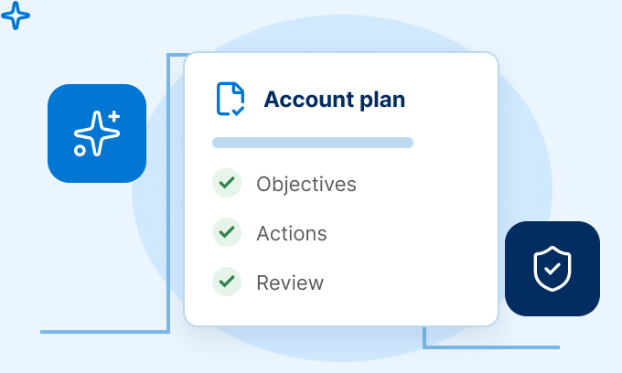

Setup
Workflow Setup
Account Plan
Create the workflow your relationship teams run.
Describe, draft with agents, then publish when ready.
-
Describe
Process, industry, and context
-
Blueprint
Agents draft steps and tasks
-
Review & Publish
Confirm, then make it available

Workflows
Industry |
Stage |
Actions |
|---|